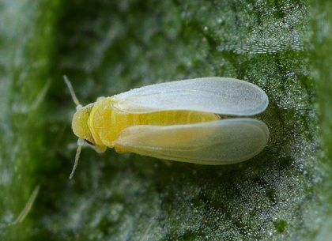
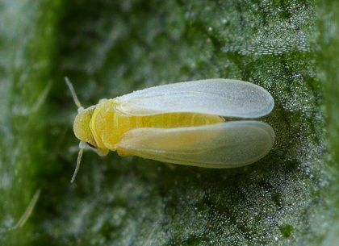
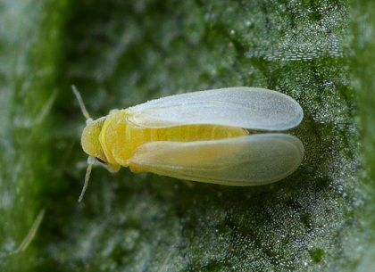

Esse projeto de IoT tem como base o monitoramento de pragas e doenças em culturas específicas utilizando
o sensor de umidade do ar e temperatura (DHT11), juntamente com o sensor de umidade do solo.
Realizamos essa análise com base em dados oficiais sobre as principais pragas de cada cultura
e as condições propícias para o aumento do número de casos.
Soja
Nas imagens abaixo você vera as principais pragas e doenças para a Soja. Clique em cada uma para mais
informações.

Milho
Nas imagens abaixo você vera as principais pragas e doenças para o Milho. Clique em cada uma para mais
informações.
Algodão
Nas imagens abaixo você vera as principais pragas e doenças para o Algodão. Clique em cada uma para mais
informações.
 
